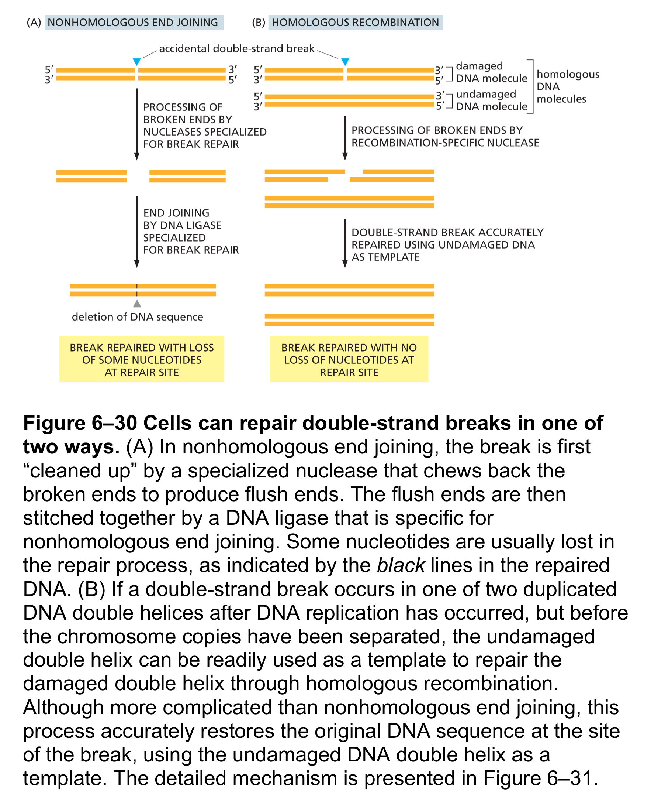
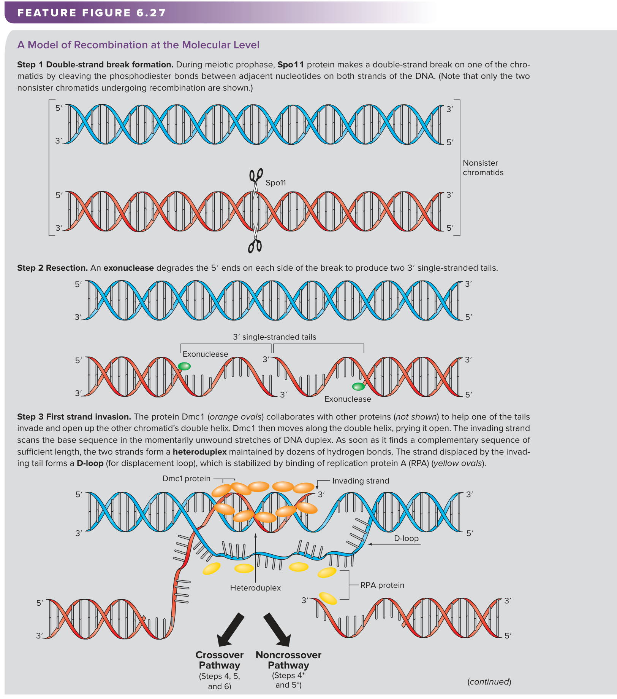
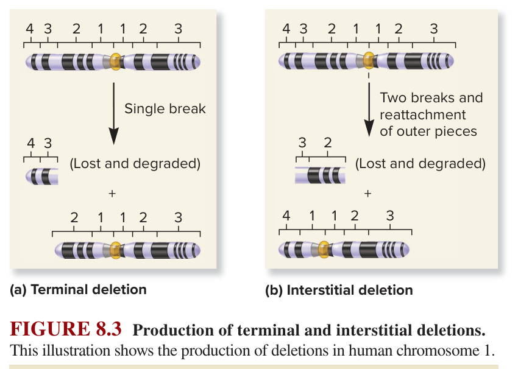
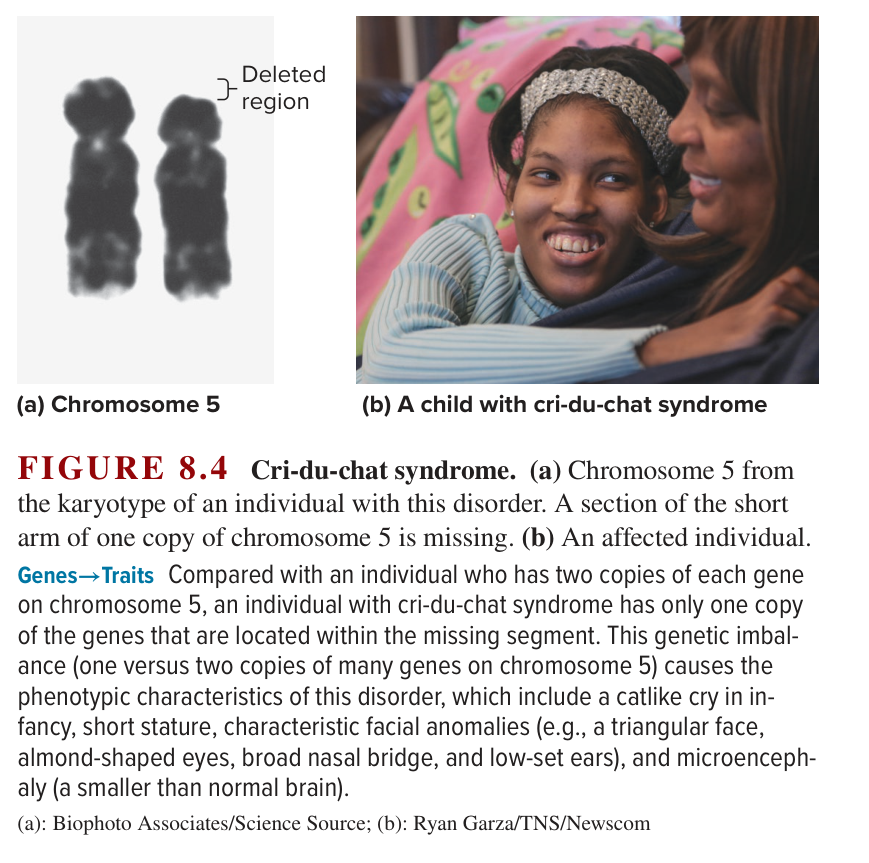
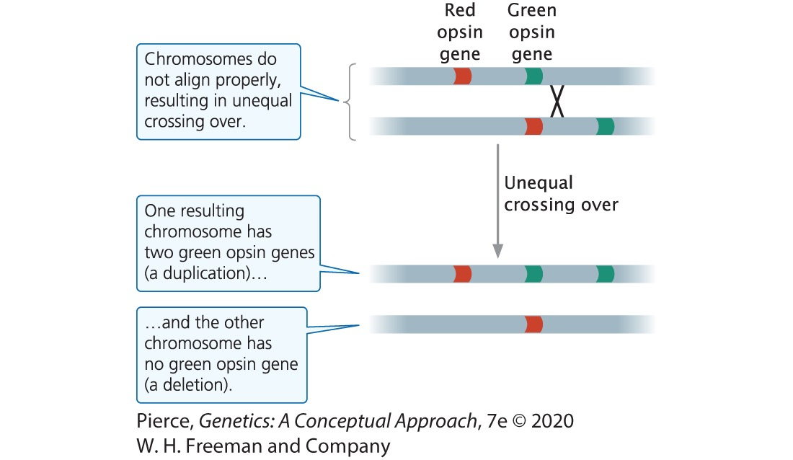
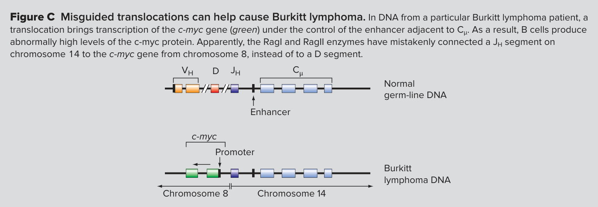

染色體真的會斷裂嗎？為什麼會斷？與貓叫症（5p 缺失）的真實成因
課本裡的染色體看起來像一根實心的「X」，但其實正常人類細胞每天都在發生 10～100 次染色體斷裂！究竟是什麼弄斷了它？而高中必考的「貓叫症」是因為隨機斷裂，還是有某種酵素專一跑去剪第 5 號染色體？
染色體的本體是一條極長極細的雙股 DNA 分子；當兩條骨架的磷酸二酯鍵在相近處同時斷開，就是DNA 雙股斷裂（DSB），也就是染色體斷成兩截。
意外來源包括游離輻射、有氧呼吸副產物（活性含氧物 ROS）、DNA 複製叉崩潰、端粒失效被紡錘絲拉斷；主動來源則是減數分裂 Spo11 刻意切斷啟動互換、免疫細胞 RAG 酵素重排抗體基因。
貓叫症（46,5p−）是第 5 號染色體短臂偶發斷裂後未能重接造成的缺失；患者確切斷裂點因人而異、缺失長度大小不一，這正是它屬於隨機偶發斷裂而非專一酵素定點切割的最直接證據。
01 為什麼染色體會斷裂？分成「意外」與「刻意」兩大類
很多高中生看到染色體插圖，會直覺以為它像塑膠棒一樣結實。其實染色體是極長的雙股 DNA 纏繞蛋白質而成，DNA 骨架靠化學鍵（磷酸二酯鍵）串起來。如果只斷一股，另一股還能當備份迅速補回；但當兩股在相近位置一起斷開（DNA 雙股斷裂，double-strand break, DSB），染色體就真的斷成兩段了。
（一）意外被打斷或拉斷（被動斷裂）——構造變異的起點
（二）細胞自己「刻意切斷」（主動／正常生理性斷裂）
斷裂不一定都是意外災難！為了完成兩件極為重要的生命任務，細胞其實會派出專屬酵素有計畫地切斷自己的染色體：
- 減數分裂前期 I 的「互換」：同源染色體不是靠在一起就會自然融合交換，而是細胞先派出 Spo11 酵素主動切開其中一條染色分體的雙股 DNA，再啟動同源重組修復系統去找另一條同源染色體對接交換（Goldberg 7e Ch06；高中三民版備課用書也稱之為「有計畫性的 DNA 雙股斷裂」）。
- 免疫細胞製造上億種抗體（V(D)J 重組）：發育中的 B 細胞與 T 細胞利用 RAG1／RAG2 重組酶刻意切開抗體基因片段、重新洗牌拼接，才能用有限基因應付千變萬化的病原體（Janeway 10e Ch05、Goldberg 7e Ch14）。
- 解開 DNA 纏結（拓樸異構酶 II）：複製或轉錄時 DNA 過度扭轉打結，拓樸異構酶 II 會暫時切斷雙股讓另一段穿過解結，再立刻縫合（Becker 10e Ch17）。
因為細胞內建了強大的 DNA 雙股斷裂修復系統（圖 1）：包含以未受損姊妹染色分體為範本、精準無誤的同源重組修復（HR），以及搶快先把斷端黏回、但常少掉幾個鹼基的非同源末端接合（NHEJ）。絕大多數斷裂會立刻修好；只有當斷片遺失、轉 180° 接回，或錯接到別條非同源染色體上，才會變成高中選修生物一教的四種構造變異——缺失、重複、倒位、易位。

🔍 點擊圖片可全螢幕放大
🔍 點擊圖片可全螢幕放大02 貓叫症是因為這樣嗎？和「專一酵素分解特定位點」有關嗎？
第一問：貓叫症是因為染色體斷裂嗎？——是的！
貓叫症（cri-du-chat syndrome，核型 46,5p−）就是因為第 5 號染色體短臂（p 臂）發生斷裂後未能重新接合，失去中節的末端片段在細胞分裂時無法被紡錘絲帶進子細胞核而被分解遺失（圖 3、圖 4）。大多數病例不是爸媽遺傳來的，而是親代產生精子或卵時偶發的染色體斷裂與遺失（Klug Ch08）。缺少這段區域會讓許多基因只剩單一複本（遺傳不平衡），導致胎兒喉頭與聲門發育異常（哭聲近似貓叫）、小頭與動作／認知發展遲緩。
第二問：這和「酵素專一分解某特定位點」有關嗎？——不是！
最直接的反證，就是教科書白紙黑字記載的「斷點不固定」：
- 如果真是某種像限制酶一樣的專一酵素，專門跑去辨識第 5 號染色體上的某個序列把它剪斷，那每位貓叫症患者缺掉的長度應該會高度一致。
- 但實情完全相反：第 5 號染色體的確切斷裂點因人而異，缺失片段的鹼基對長度大小不一——有些患者只缺一小段，有些患者缺一大段，且缺失越長通常影響越嚴重（Solomon 11e Ch16、Klug Ch08）。
- 至於為什麼課本老是舉第 5 號染色體短臂當例子、而不是別條染色體？其實各條染色體都可能隨機斷裂，只是斷掉關鍵必需基因的大片段多半在胚胎早期就流產無法出生；5p 缺失的胎兒仍能活產存活，因此在臨床上最具辨識度。

🔍 點擊圖片可全螢幕放大
🔍 點擊圖片可全螢幕放大03 隨機斷裂 vs. 真的有固定弱點或專一酵素切錯的案例
為了讓高中生徹底分清楚「貓叫症」跟「特定位置／專一酵素出錯」有什麼不同，把教科書裡的四個經典人類疾病擺在一起對照，一眼就能看透：
| 變異型態 | 真正成因 | 斷點是否固定？ | 教科書經典案例（Vault 依據） |
|---|---|---|---|
| 偶發隨機斷裂未重接 | 輻射、活性含氧物、複製意外等導致雙股斷裂後無中節斷片遺失 | 不固定 （因人而異、長度不一） |
貓叫症（5p 短臂缺失；Solomon 11e Ch16、Klug Ch08） |
| 高度相似序列錯位不等互換 | 相鄰基因 DNA 序列高達 98% 相同，減數分裂易錯位對齊 | 集中於相似基因區 | 紅綠色盲（X 染色體紅、綠視蛋白基因不等互換；Pierce 7e Ch08，圖 5） |
| 固定染色體脆弱位點 | 特定三核苷酸重複（CGG 達 200～1000+ 次）造成結構固定脆弱 | 固定 （同家族同一位置） |
脆弱 X 染色體症（Solomon 11e Ch16、Klug Ch08） |
| 真的是「專一酵素」切錯位點 | 免疫細胞負責剪接抗體基因的 RAG1／RAG2 酵素辨識失誤 | 集中於抗體重組訊號與 c-myc 附近 | 伯基特氏淋巴瘤（體細胞第 8、14 號染色體易位；Goldberg 7e Ch14，圖 6） |

🔍 點擊圖片可全螢幕放大
🔍 點擊圖片可全螢幕放大04 經典英文原文教科書逐句考證
以下所有英文原文段落均原封不動摘錄自 Vault 正式譯本，提供高中老師與學生完整溯源。
[Goldberg 7e Ch. 06] "A meiotic recombination event begins when Spo11 makes a double-strand break in one of the four chromatids (Fig. 6.27, Step 1)."
[Goldberg 7e] 一次減數分裂重組事件開始時，Spo11 在四條染色分體之一主動造成雙股斷裂。
[Klug Ch. 08] "Most often, the condition is not inherited but instead results from the sporadic loss of chromosomal material in gametes. The length of the short arm that is deleted varies somewhat; longer deletions appear to have a greater impact on the physical, psychomotor, and mental skill levels of those children who survive."
[Klug] 此症多半不是遺傳而來，而是配子偶發失去染色體物質所致；短臂缺失的長度不一，缺失越長影響似乎越大。
05 高中教學、常見陷阱與查證邊界
先點出「DNA 雙股斷裂每天都在發生（10～100 次）」→ 區分「意外斷裂 vs. 細胞主動切斷（互換）」→ 說明「修復成功就沒事；沒接好就變成缺失、重複、倒位、易位」→ 最後拿「貓叫症斷點因人而異」反證它不是專一酵素剪的。
常見命題陷阱與審定名詞
- 陷阱 1：「沒照放射線、沒吃致突變物質，染色體就不會斷裂」→ 錯（細胞有氧呼吸的活性含氧物、複製叉崩潰與減數分裂 Spo11 主動切斷在日常生理就會發生）。
- 陷阱 2：「貓叫症是特定酵素專一剪斷第 5 號染色體固定位點」→ 錯（斷點因人而異、缺失大小不一，屬偶發隨機斷裂或異常重組所致）。
- 審定名詞：臺灣教育部《生命科學名詞》審定
cri-du-chat syndrome為貓叫症（譯本亦見貓哭症候群）；reactive oxygen species為活性含氧物；chromatid為染色分體。
本頁所有核心機制（每日 10–100 次 DSB、游離輻射與 ROS、複製叉崩潰、Spo11 主動切割、RAG1/2 伯基特氏淋巴瘤易位、紅綠色盲 98% 相似序列不等互換、貓叫症斷點因人而異且多屬偶發）均有上述 7 部正典與高中選修跨版本整合支持。臨床常見補充統計「約 80–85% 貓叫症為新發斷裂、約 10–15% 源自親代平衡易位」之確切百分比目前在 Vault 譯本中查無數字，屬外部臨床統計常識；「5p 缺失胎兒能存活而其他致命大缺失早期淘汰」則係結合 Solomon 11e 大型缺失多致死所作之教學解讀。